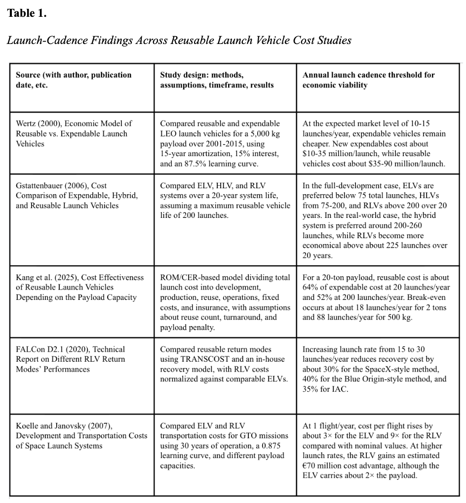
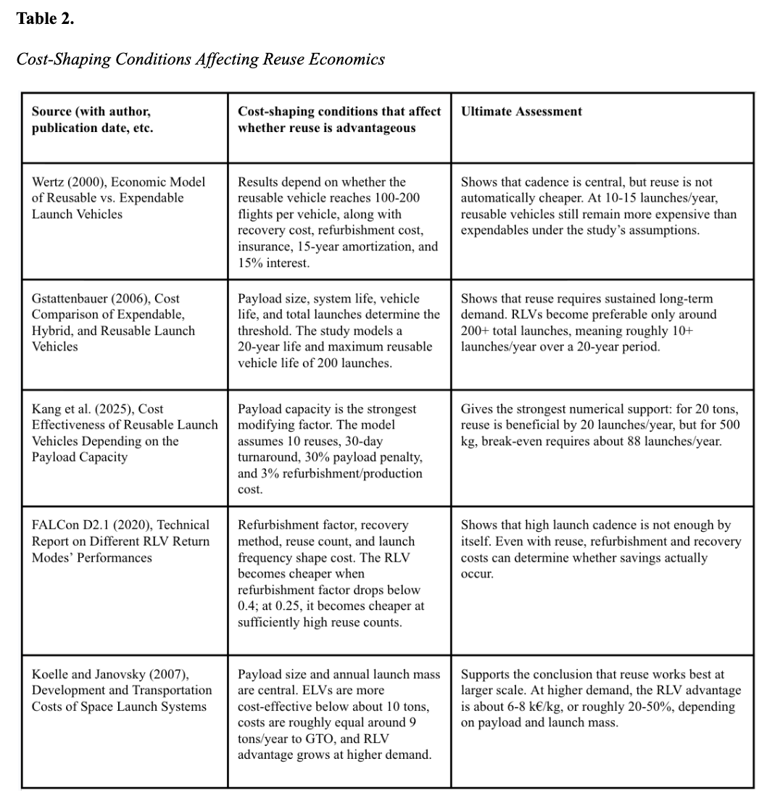

Every stage of a year-long Intern/Mentor investigation, from the first hypothesis to the final synthesis paper. Each section explains what the assignment accomplished, and the original work is embedded so it can be read in place.
This research was completed through the Gifted & Talented Intern/Mentor Program, a year-long course in which students design and carry out an original, professional-level study. Each deliverable below built on the one before it.
Developed a focused research question on rocket reusability and presented a formal hypothesis and rationale.
Built and annotated a body of 20 academic and technical sources, plus a synthesis table comparing them.
Conducted a primary-source interview, structured the argument into a detailed outline, and ran the comparative data analysis.
Synthesized five cost models and the literature into an original research paper and final product.
My proposal set up the problem and a testable hypothesis around one key tension: reusability is assumed to be cheaper, but that is not guaranteed. It established my research question, In what ways can advancements in rocket reusability lower the long-term costs of space exploration and make future missions more sustainable?, and a plan to focus on quantitative measures like launch frequency, refurbishment time, and number of reuses.
Embedded PDF. If your browser does not display it inline, use “Open ↗” or “Download” above.
The Annotated Source List is the foundation the paper stands on: peer-reviewed journal articles, NASA technical reports and standards, and cost-modeling studies, spanning economics, engineering design, guidance and recovery, certification, and environmental impact. Each source was selected for its relevance to a specific strand of the research question.
Embedded PDF · 20 sources across NASA, peer-reviewed journals, and cost-modeling literature.
Before drafting, I mapped the full argument into a detailed outline, moving from thesis, to cost and access, to engineering and operational decisions, to guidance and recovery, and finally to environmental impact. Every claim is tied to specific cited sources, which is what made the final paper a true synthesis rather than a summary.
Embedded PDF · the skeleton that organized five cost models into one coherent argument.
“Aircraft maintenance has 70 years of procedures, and reusable rockets are literally rewriting all of these processes in real time.”
I also interviewed a primary source to learn more about the real-world side of my topic. It backed up one of my main points: unlike airplanes, reusable rockets are still figuring out their maintenance process, which is a big reason why refurbishment and turnaround cost so much.
The core data came from a comparative analysis of five independent cost models. I extracted each study's launch-cadence threshold for viability and the conditions that shape cost, then compared them side by side. Together, the two tables below show that cadence matters, but payload size, refurbishment, and recovery decide whether reuse actually saves money.


The culminating work of the year: an original paper synthesizing the literature and five cost models into a single argument. It concludes that reusability can reduce long-term launch costs, but only when engineering design, operational efficiency, safety verification, and market demand are balanced together. This is both the research-process essay and the final product for the program.
Embedded PDF · full paper including abstract, literature review, methods, results, and references.